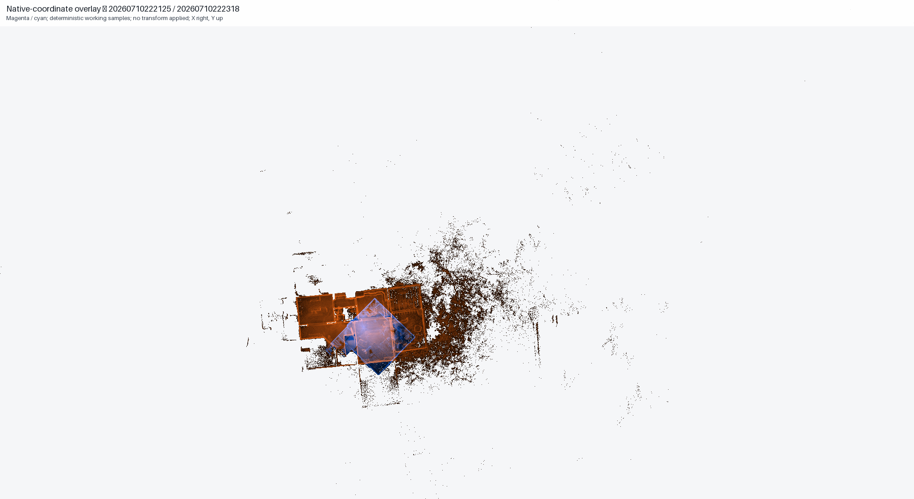
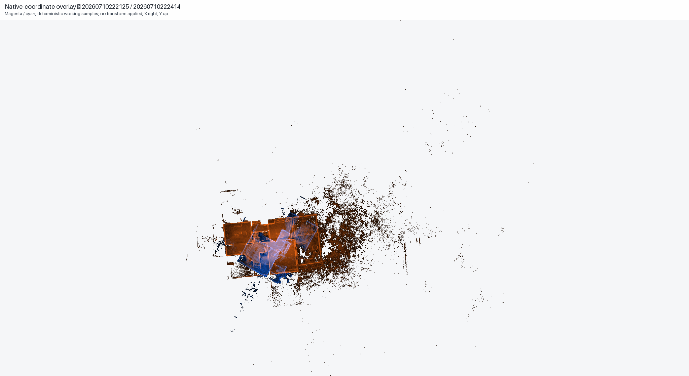
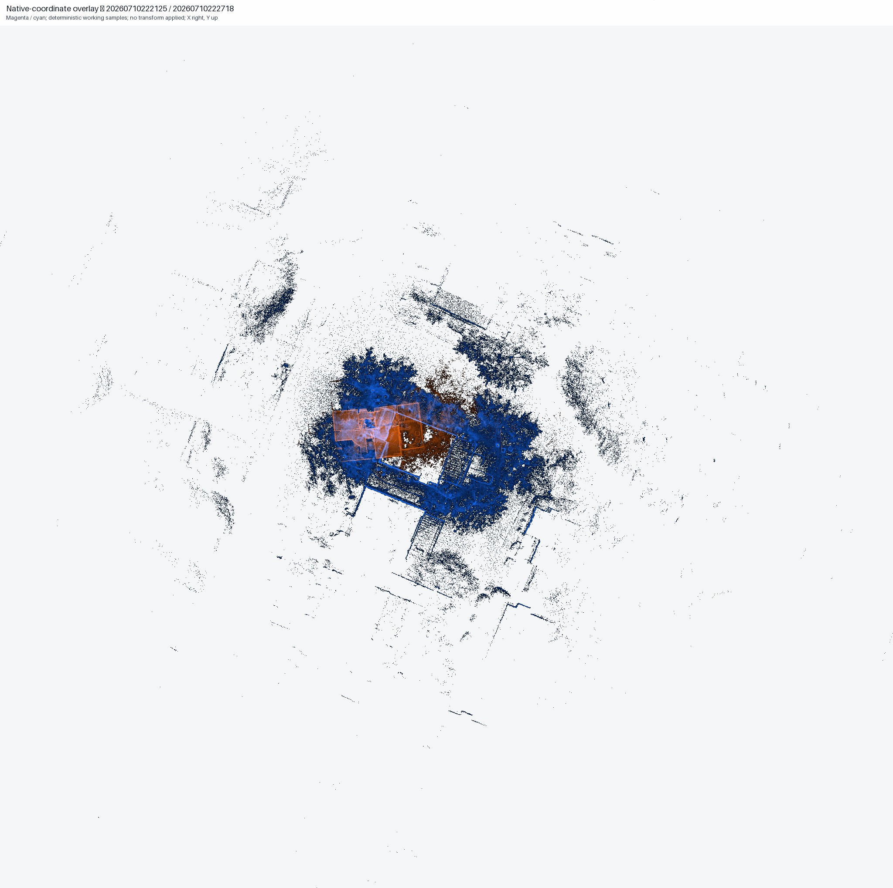
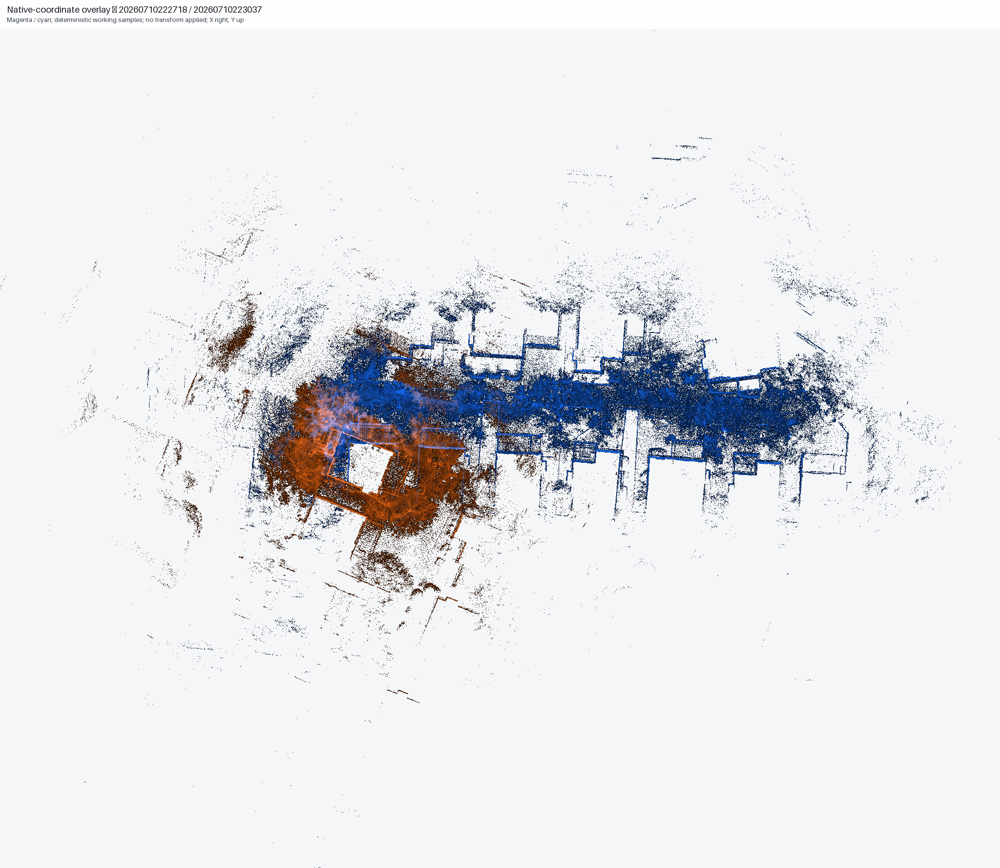

Report 05 · current native-coordinate evidence
Native-coordinate overlap analysis
Five current pair overlays and the controlling analytical limitations.
Finding: Five native-coordinate scan pairs were analyzed: four showed weak native overlap and one showed no material overlap. No transform was applied, no registration tolerance was adopted, and no pair was declared registered.
Pairs analyzed5Current evidence
Weak overlap4Native coordinates
No material overlap1Native coordinates
Transforms0None applied
Pair overlays





Required next control
Review discrete common features in a licensed compatible runtime. Adopt a measurable acceptance tolerance before using pass/fail language. Do not independently transform or declare any pair registered on the basis of these analytical overlays.